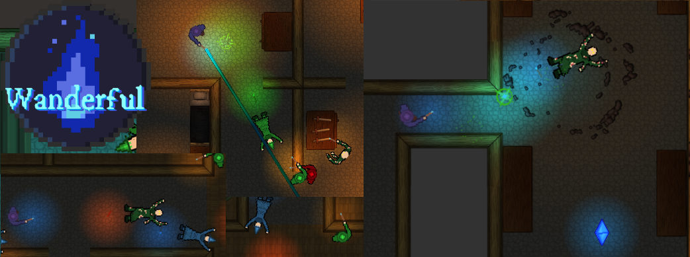

Week 7 - Pushing For The Second Demo
Throughout week 7, work was very much focused on creating a more fleshed out experience for the second demo session, which was due to be held on the monday after (on the 16th of May). In the beginning of the week, I kept working on the beam spell type which was a bit challenging to get right. I spent a lot of time looking into whether or not it was possible to “cut off” animated textures in order to get the beam to stop where it collided with a wall for example but in the end I instead opted to make use of a Unity shader while following a youtube tutorial. After getting the beam spell type we felt that the magic system was sufficiently fleshed out for the demo we were making.
While we originally wanted to have a meeting at the beginning of the week, members of the group were busy with other things so the meeting was postponed towards the end of the week. During the meeting we were set to merge all of our work into a single file in Unity however when doing this, we ran into quite a number of merge issues which took some time to resolve. After we got the merge issues resolved, we looked at the demo and agreed that it had some issues (for example the level loading/reloading was quite unreliable and buggy).
Once again I went into a bit of a personal crunch on the game during the weekend as I felt that it would be great if we could have a smooth & less buggy game to get feedback on during the second demo session. For a start, I went back and looked at how me and Alex had handled scene management in Unity in the game that we made for our candidate degree project game. In that game, we had made it so that a number of components would persist through scene loads and I felt that we could use a similar structure for our demo. First off, I made it so that our game manager, player, audio source and UI elements would persist across each level (whereas before these entities could be recreated upon each level reload). By doing this, the player object could be easily carried over between each level (so that the player could keep the same spells/score for example) while progressing through the game. In the player script, I added that instead of instantly reloading the level upon death, the player would enter a “dead state” where they spawned a dead body on the ground and couldn't move. In the game manager I coded methods to handle reloads of each level (resetting all enemies, player health/mana etc) as well as a method to restart the entire game from the start. Finally, I implemented a rudimentary score system which I felt would work well on a demo setting (having people compete for a highest score might be fun for example).